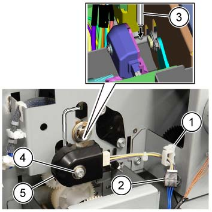
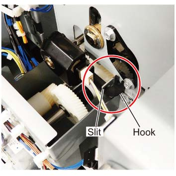

REP 76.8.2 TR2 Encoder 
参考 PL:PL 76.8
Removal

执行IOT的[关机]步骤. 确认电源开关已关闭并拔掉电源插头.
静电可能损坏电气部件. 静电可能损坏电气部件. 维修时请始终佩戴腕带. If a wrist 条带 不是 可用的, touch 一些 metallic parts 在...之前 servicing to discharge the static electricity.
拆卸 后面 上方 盖板. (PL 76.2)
拆卸 TR2 Encoder. (图 1)
释放 线束 从 卡箍.
断开连接器.
插入 HEX Key 2.5 mm 进入 轴 hole 在哪里 the TR2 Encoder 已安装 so as to 停止 轴 从 spinning.
拆卸螺钉.
拆卸 TR2 Encoder.

(图 1) ism476056
安装
To 安装, carry 出 the removal steps 按相反顺序.
安装时, 对齐 Hook 的 TR2 Encoder 使用 Slit on 框架 侧面. (图 2)

(图 2) ism476064